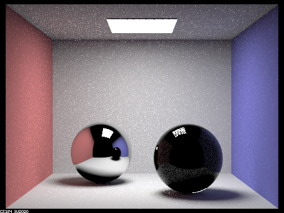

Project 3-2: Additions to Pathtracer
by Kelly Hu and Sofia Howard-Jimenez
https://hukellyy.github.io/proj-webpage-kelbee/proj3-2/index.html
Overview
In Project 3-2, we implemented additional material rendering for our ray
tracer from Project 3-1 by computing the BSDF for an intersection point on
glass, mirror, and microfacet surfaces. Now, we are able to render objects
made from glass, mirror, or microfacet materials!
Part 1: Mirror and Glass Materials
Show a sequence of six images of scene CBspheres.dae rendered with
max_ray_depth set to 0, 1, 2, 3, 4, 5, and 100. The other settings should
be at least 64 samples per pixel and 4 samples per light. Make sure to
include all screenshots.
 max_ray_depth = 0
max_ray_depth = 0
 max_ray_depth = 1
max_ray_depth = 1

max_ray_depth = 2
max_ray_depth = 3
max_ray_depth = 4
max_ray_depth = 5
max_ray_depth = 100
Point out the new multibounce effects that appear in each image.
Explain how these bounce numbers relate to the particular effects that
appear. Make sure to include all screenshots.
Part 2: Microfacet Material
Show a screenshot sequence of 4 images of scene CBdragon_microfacet_au.dae
rendered with α set to 0.005, 0.05, 0.25 and 0.5. The other settings
should be at least 128 samples per pixel and 1 samples per light. The
number of bounces should be at least 5. Describe the differences between
different images. Note that, to change the α, just open the .dae file and
search for microfacet.
Show two images of scene CBbunny_microfacet_cu.dae rendered using cosine
hemisphere sampling (default) and your importance sampling. The sampling
rate should be fixed at 64 samples per pixel and 1 samples per light. The
number of bounces should be at least 5. Briefly discuss their difference.
 CBlucy.dae
CBlucy.dae
 maxplanck.dae
maxplanck.dae
Show at least one image with some other conductor material, replacing eta
and k. Note that you should look up values for real data rather than
modifying them arbitrarily. Tell us what kind of material your parameters
correspond to.